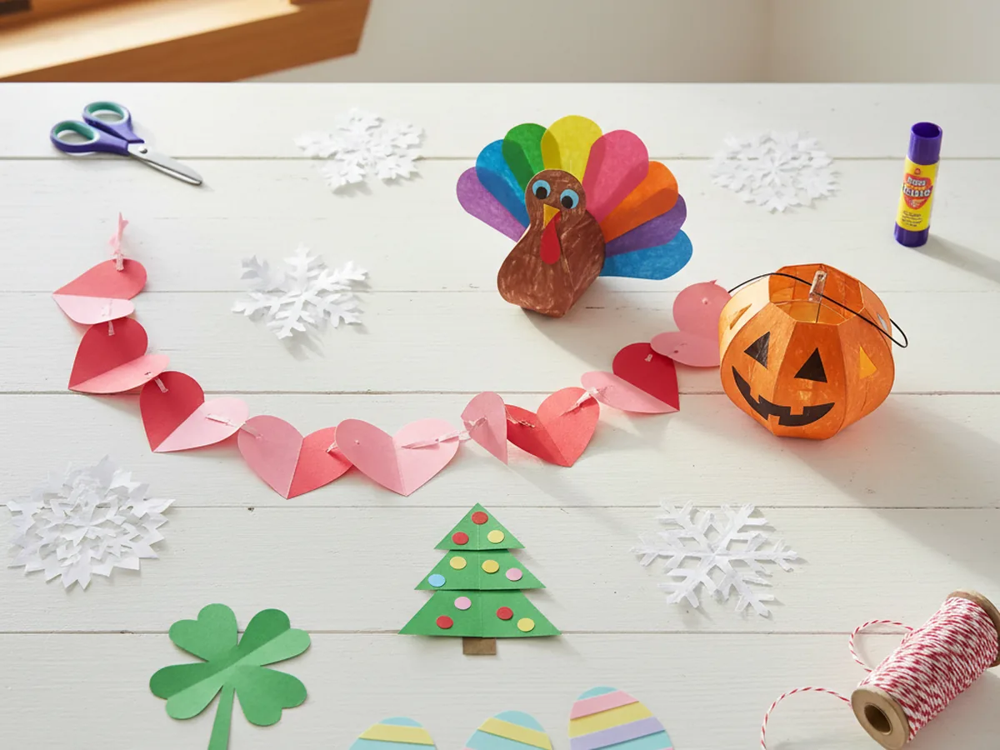
Every season seems to bring another reason to celebrate, and a stack of colorful paper is one of the simplest ways to make those moments feel a little more special. From hearts in February to snowflakes in December, paper crafts give your child something to make, hold, and feel proud of all year long. These holiday craft paper ideas are gathered to help you create cozy, low-stress moments together, no matter which celebration is coming up next. ✂️
This list pulls together 20 sweet holiday craft paper projects that span the whole calendar, from Valentine's Day to New Year's Eve. Each one is beginner-friendly, uses simple supplies, and gives you a finished result your child will be proud to display. Pick the one that matches the holiday you are celebrating soon, and turn an ordinary afternoon into something memorable. 🎉
What You'll Need
Most of these holiday craft paper ideas use the same handful of cozy supplies, so a single trip to the craft drawer will set you up for plenty of projects ahead.
- Crayola Construction Paper 240 Count, a generous rainbow pack to cover any holiday color you need.
- Neenah Bright White Cardstock 100 Sheets, sturdy paper perfect for cards, masks, and frames.
- Craft Craze Tissue Paper 100 Sheets, soft colorful tissue ready for lanterns, garlands, and stained-glass projects.
- Elmer's Disappearing Purple Glue Sticks 6-Pack, mess-free sticks that show kids exactly where they spread glue.
- Elmer's Washable School Glue 4 oz 6-Pack, a gentle liquid glue for layering and detail work.
- Fiskars 5 inch Blunt-Tip Kids Scissors 3-Pack, safe and easy to use for little hands.
- Crayola Ultra Clean Washable Markers 10 Count, vibrant colors that wash off skin and clothes easily.
- HULISEN Colorful Bakers Twine 15 Rolls, perfect for hanging garlands, mobiles, and ornaments.
- A pencil and ruler, for sketching shapes before cutting.
20 Holiday Craft Paper Ideas to Make with Your Kids
1. Valentine's Day Heart Garland
Cut a stack of paper hearts in pink, red, and white, then string them together with twine to drape across a doorway or mantel. The garland is one of the easiest holiday craft paper projects for Valentine's Day and looks instantly cozy. Even a young toddler can help by handing you hearts in the order they want. The finished garland feels like a little hug across the room.
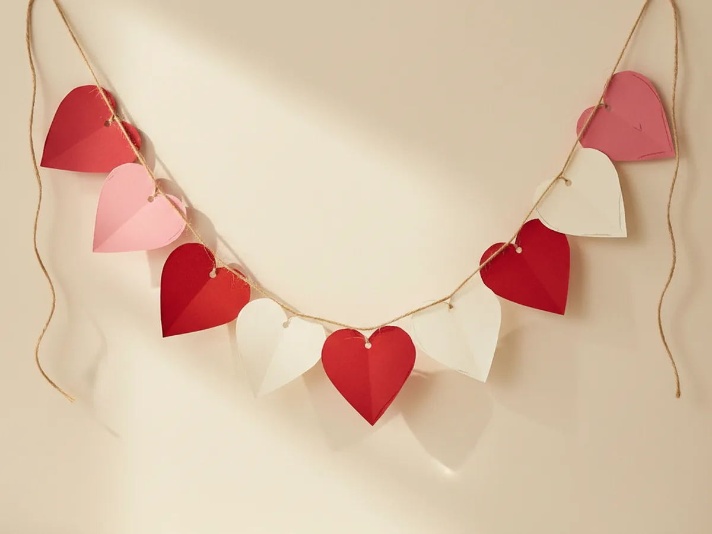
2. Heart Pop-Up Card
Fold a piece of cardstock in half and snip two short slits along the fold to push inward, creating a hidden pop-up shelf. Glue a layered paper heart onto the shelf so it springs out the moment the card is opened. Your child will love the surprise, and the recipient even more. This is one of the sweetest holiday craft paper ideas to give to a grandparent or a school friend.
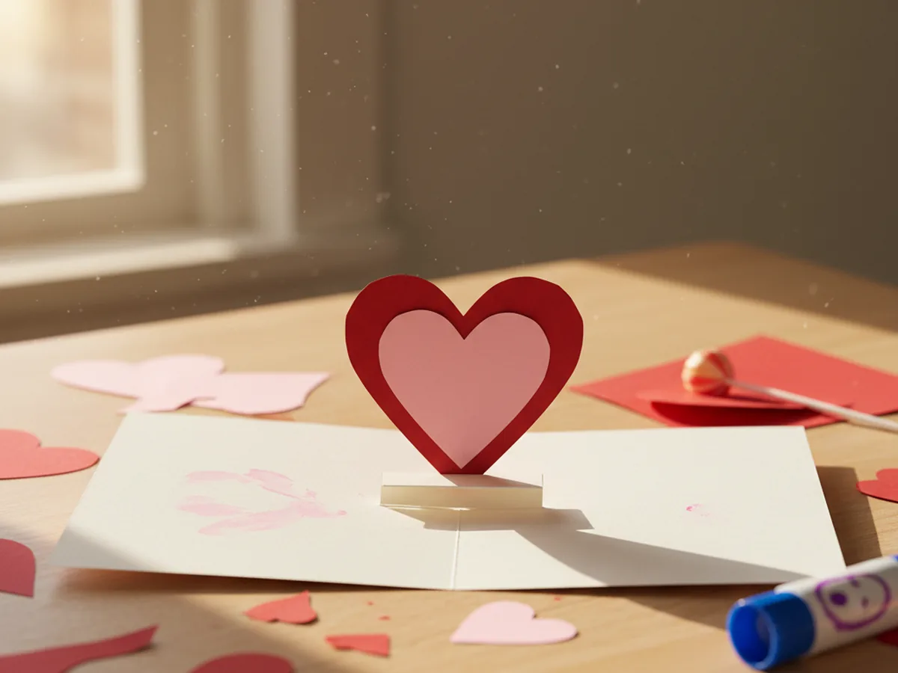
3. St. Patrick's Day Shamrock Wreath
Trace and cut dozens of green paper shamrocks in different shades, then glue them around a paper plate ring with the center cut out to form a lush green wreath. Tie a green ribbon at the top for hanging. The shamrocks layer beautifully and look fuller than you would expect. This is one of the brightest holiday craft paper projects for St. Patrick's Day, and it makes a charming front-door welcome.
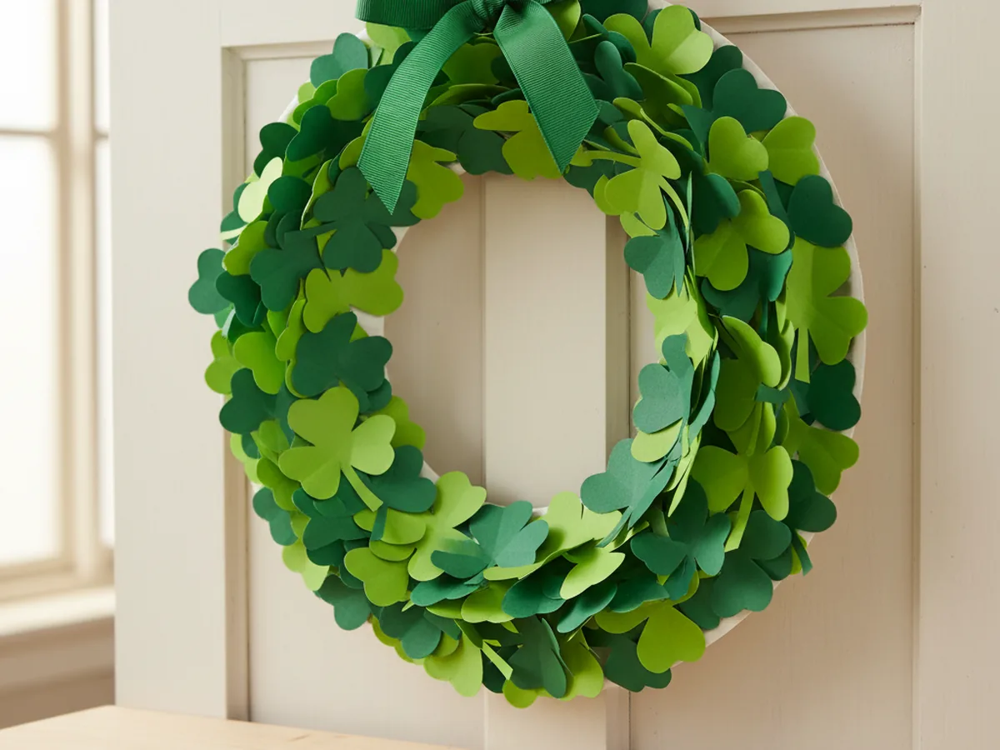
4. Easter Egg Paper Chain Garland
Cut several pastel paper egg shapes and decorate each with stripes, dots, or zigzag lines using markers. String the eggs together with twine or link them with paper rings to make a long Easter garland. The egg shapes are so simple even your littlest helper can decorate one. This is one of the cheeriest holiday craft paper ideas for spring and gives toddlers an easy, satisfying job.
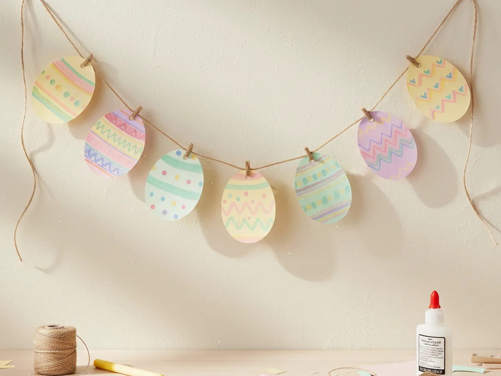
5. Easter Bunny Paper Mask
Cut a wide oval mask shape from white cardstock with two eye holes, then add tall paper bunny ears, a pink paper triangle nose, and a few pipe-cleaner whiskers. Punch two small holes near the sides and tie an elastic loop so it stays on. Your child will hop around the kitchen for the rest of the morning. As far as holiday craft paper projects go, this one turns into immediate playtime fun.
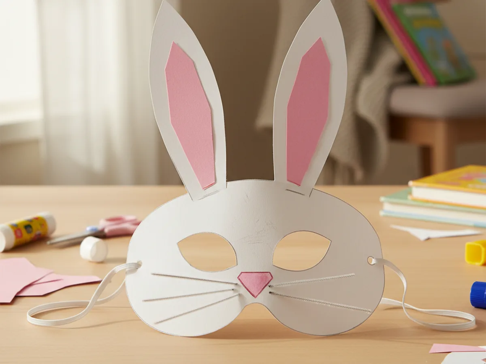
6. Mother's Day Tulip Bouquet Card
Cut several paper tulip shapes in pink, yellow, and purple and glue them onto a folded green cardstock card so the tulip stems peek out from a tied paper ribbon. Inside, your child can draw a heart or write a sweet little note. The bouquet card stands up on a shelf as a keepsake. This is one of the most thoughtful holiday craft paper ideas for moms and grandmas.
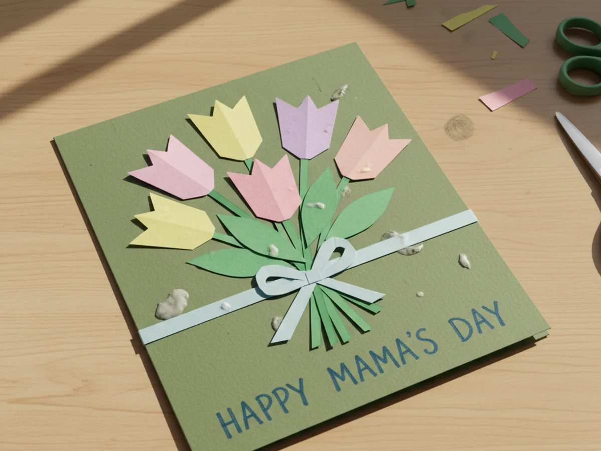
7. Father's Day Necktie Card
Fold a sheet of cardstock in half and cut a small triangle at the top to look like a shirt collar, then glue a paper necktie inside in your child's favorite pattern. Add a paper button at the collar and a sweet message inside. The card looks just like a tiny dress shirt for dad. This is one of the most charming holiday craft paper projects for Father's Day, especially for kids who want to make something handmade and personal.
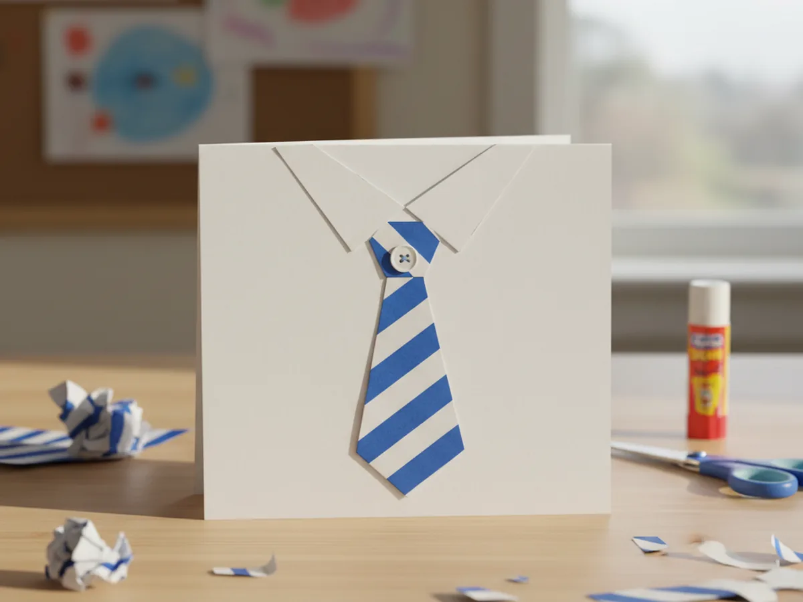
8. Fourth of July Paper Star Banner
Cut chunky paper stars from red, white, and blue cardstock, decorate a few with silver glitter or marker dots, then string them along baker's twine. Hang the banner across a porch for a festive Fourth of July look. The stars are so simple to cut that even preschoolers can help with stickers and dot markers. This is one of the most patriotic holiday craft paper ideas for summer celebrations.
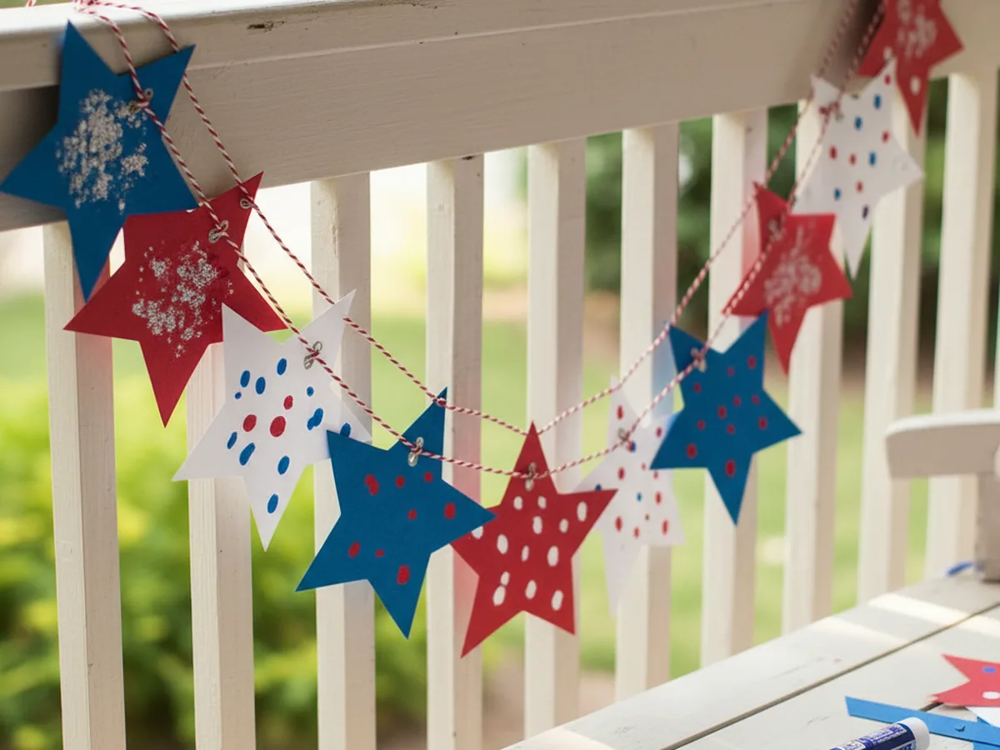
9. Halloween Paper Pumpkin Lantern
Fold an orange sheet of paper in half lengthwise and cut a row of slits from the fold toward the open edge. Unfold the paper, roll it into a tube, and tape it closed to form a pumpkin lantern. Add a small green paper stem on top and a paper handle. Drop in a battery tea light for a soft glow. This is one of the coziest holiday craft paper ideas for Halloween night.
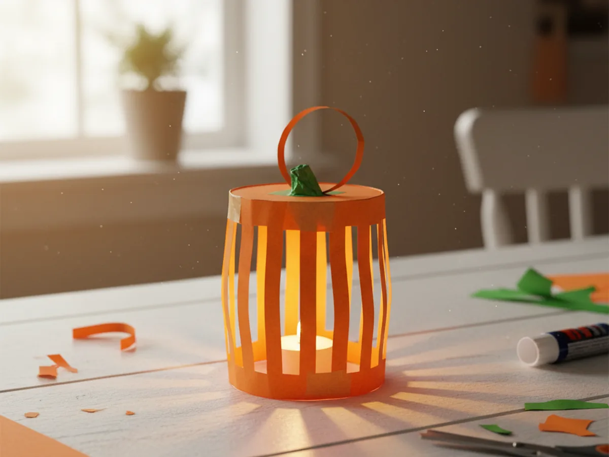
10. Halloween Bat Paper Mobile
Cut three black paper bat shapes in different sizes and glue two small googly eyes on each. Tape a thread to the back of every bat and tie them at different heights from a small wooden twig. Hang the mobile in your child's window for a friendly Halloween look. The bats sway with every passing breeze. This is one of the most playful holiday craft paper projects for October.
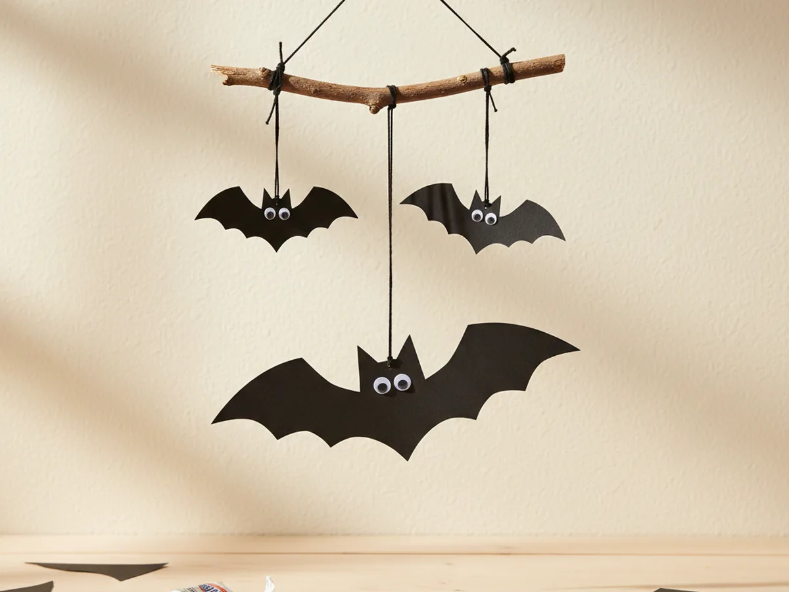
11. Thanksgiving Paper Turkey
Cut a brown paper teardrop body and glue colorful paper feathers in red, orange, and yellow fanning out behind it. Add two googly eyes, a small orange triangle beak, and a red paper waddle. Set the turkey at each plate as a darling Thanksgiving table decoration. The kids can write each guest's name on a feather. This is one of the warmest holiday craft paper ideas for the Thanksgiving table.
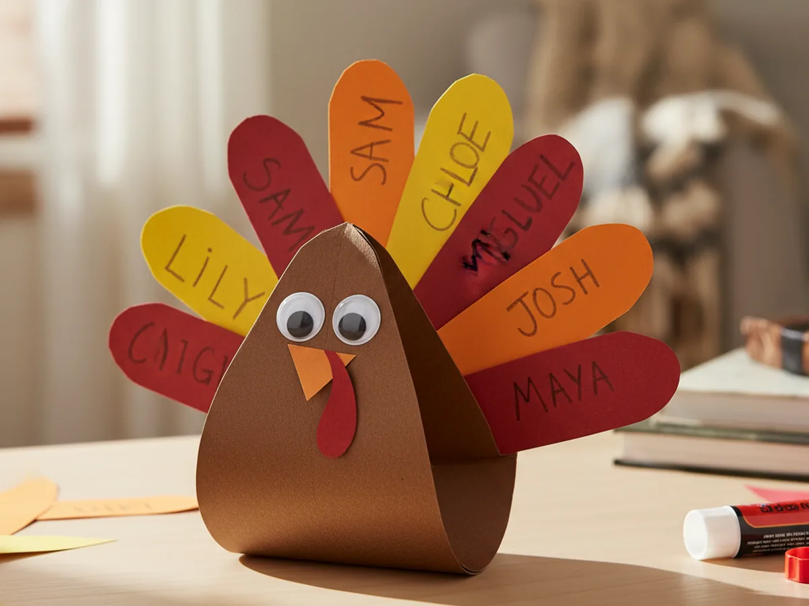
12. Thanksgiving Gratitude Tree
Sketch a simple bare tree on a sheet of cardstock or tape real twigs to a wall, then cut paper leaves in red, orange, and yellow. Each day before Thanksgiving, your child writes one thing they are grateful for on a leaf and tapes it to the tree. By the holiday it bursts with color. This is one of the most meaningful holiday craft paper projects and creates a sweet family tradition the kids look forward to.
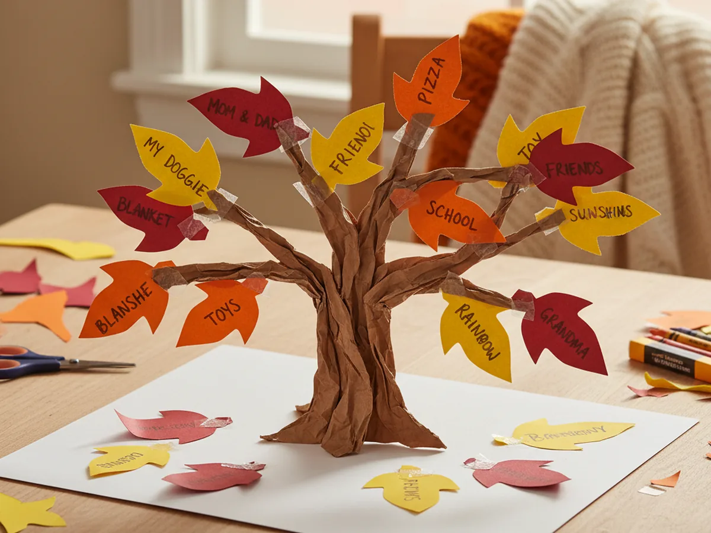
13. Hanukkah Paper Menorah
Cut a wide blue cardstock base and glue nine tall paper candles standing up, with the middle shamash candle a little taller than the rest. Add a small yellow paper flame to each candle as the eight nights pass. The menorah grows brighter with every evening. This is one of the most heartwarming holiday craft paper ideas for celebrating Hanukkah with little ones.
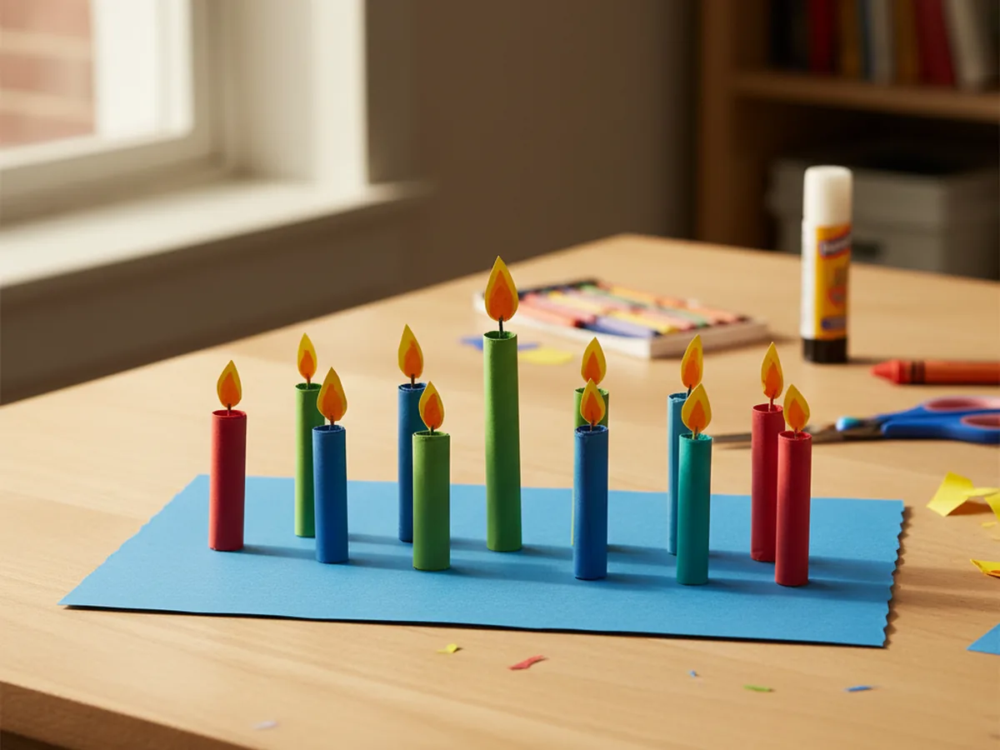
14. Diwali Paper Lantern
Fold a sheet of bright orange or pink paper in half and cut evenly spaced slits from the folded edge, then unfold and glue the short sides together to form a small Diwali-style lantern. Add a paper handle on top and string a few together for a glowing display. The bright colors light up a room beautifully. As holiday craft paper projects go, this one is perfect for celebrating Diwali at home with little hands.
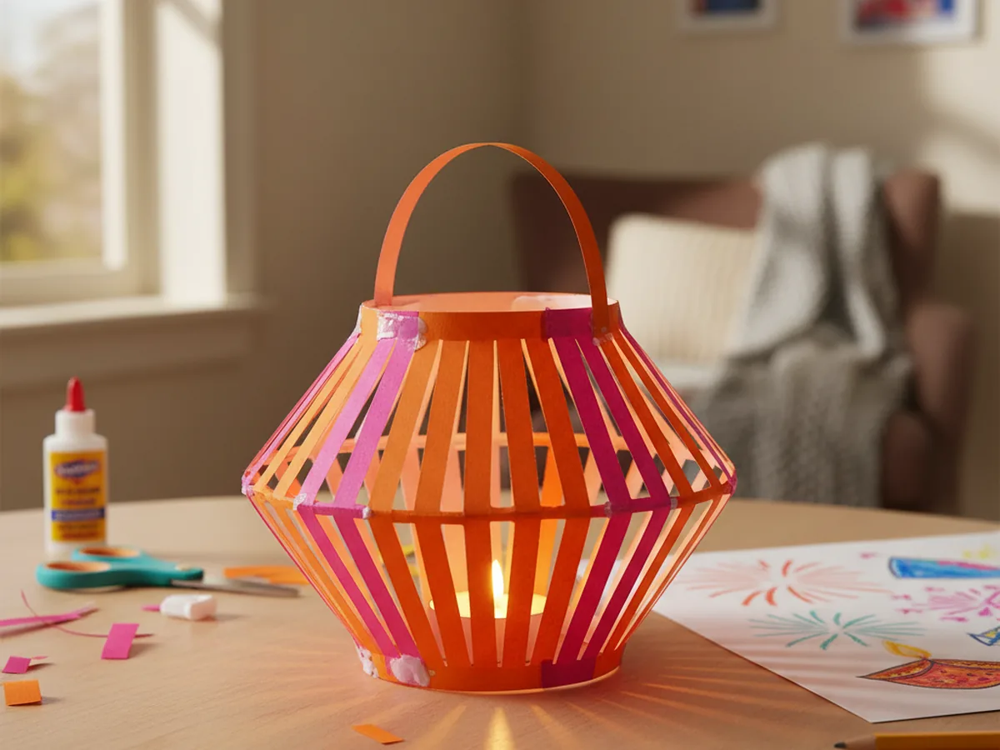
15. Christmas Paper Snowflakes
Fold a square of white paper in half twice and then into a triangle, snip small shapes along the folded edges, and unfold to reveal a snowflake. Tape the snowflakes onto windows or hang them with thread for a soft, lacy holiday feel. Each snowflake is a tiny surprise as it unfolds. This is one of the most calming holiday craft paper ideas for cozy winter afternoons.
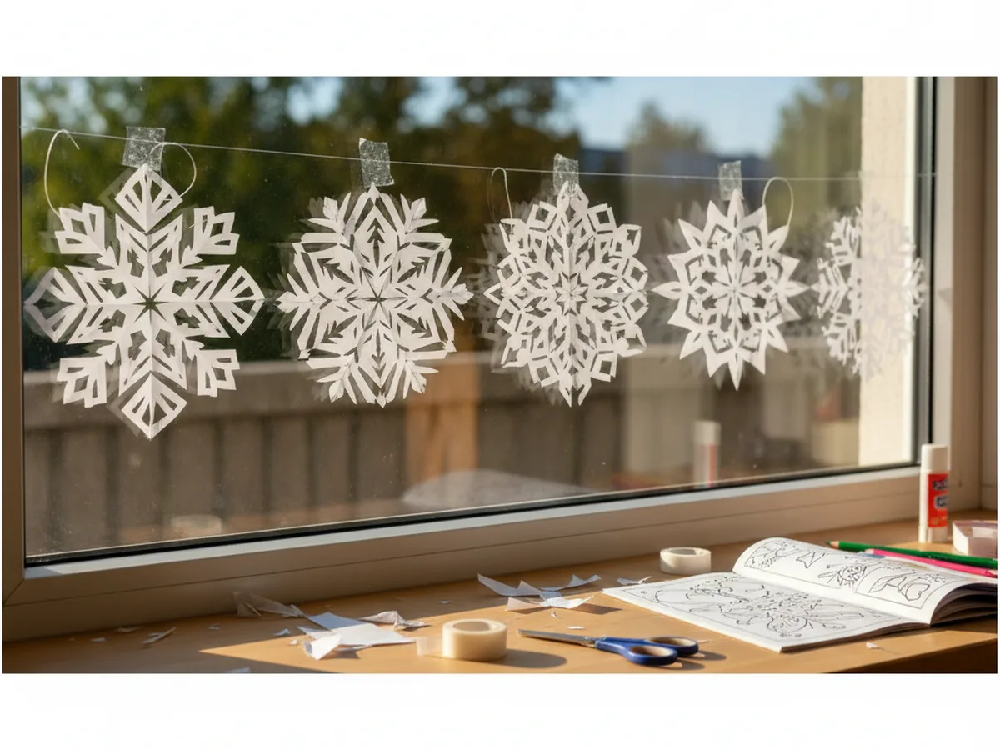
16. Paper Christmas Tree Card
Cut three green paper triangles in different sizes and stack them on a folded white card to form a layered Christmas tree, then add a yellow paper star on top and tiny paper dot ornaments. The dimensional layers give the tree a lovely fluffy look. This is one of the most festive holiday craft paper projects for a child to send to a grandparent or teacher. ✨
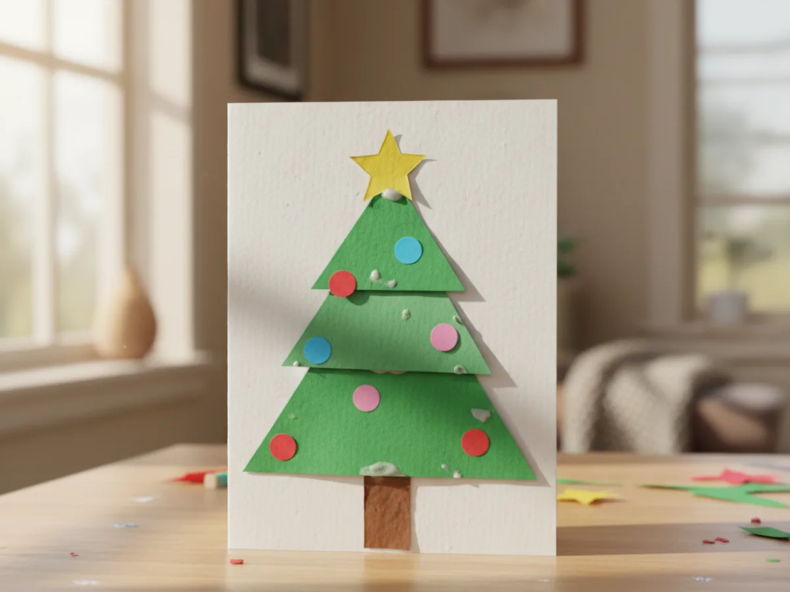
17. Paper Stocking Garland
Trace and cut several stocking shapes from red and green construction paper, then add a small white cuff at the top of each one. Punch a hole at the cuff and string the stockings together with twine to make a charming little garland. Hang it across the playroom or above the kids' bunk beds. This is one of the coziest holiday craft paper ideas to bring a Christmas feel to a small corner of the home.
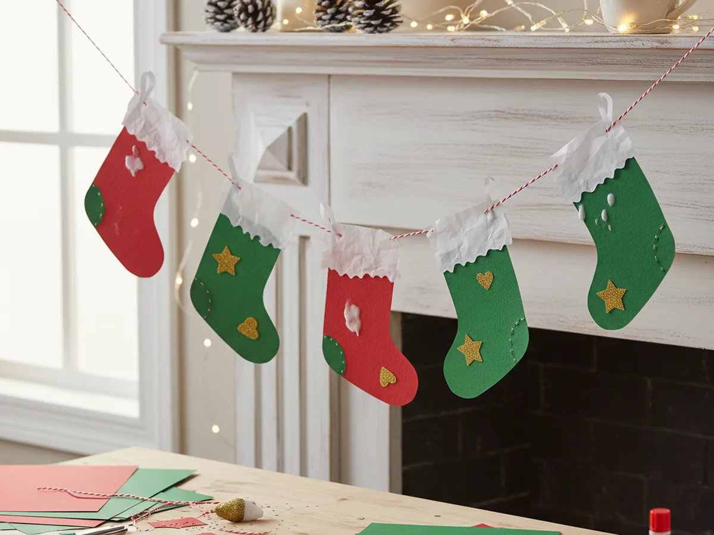
18. Paper Reindeer Card
Trace your child's hand twice on brown paper to use as antlers, then cut a brown paper face shape with a red paper nose and two googly eyes. Glue everything onto a folded white card so the antlers stretch upward. The handprint antlers make this one extra meaningful as a keepsake. As far as holiday craft paper ideas go, this little reindeer is a sweet way to capture how small your child's hands still are. 🎄
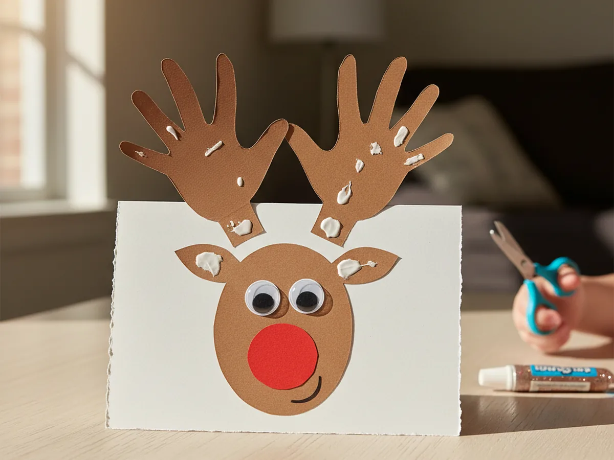
19. Paper Christmas Wreath
Cut dozens of green paper holly leaves and red paper berries, then glue them around a paper plate ring with the center cut out. Add a red ribbon bow at the bottom for the finishing touch. The wreath looks adorable on a bedroom door or in a window. This is one of the most beloved holiday craft paper projects for setting a festive mood in the kids' rooms.
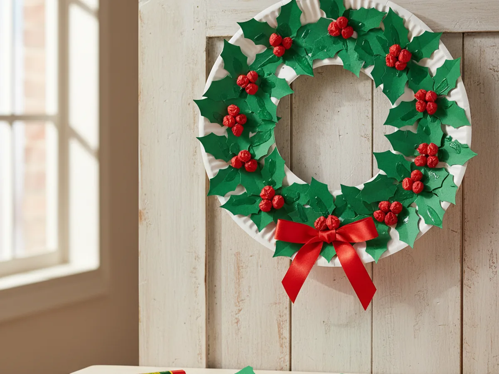
20. New Year's Eve Paper Crown
Cut a long strip of gold or silver cardstock and snip a row of pointy zigzag peaks along the top edge to form a sparkling crown. Decorate with sticker gems, glitter dots, or marker stars, then tape the ends together to fit your child's head. Wear it for the New Year's Eve countdown. This is one of the most fun holiday craft paper ideas for staying up just a little later as a family. 🌟
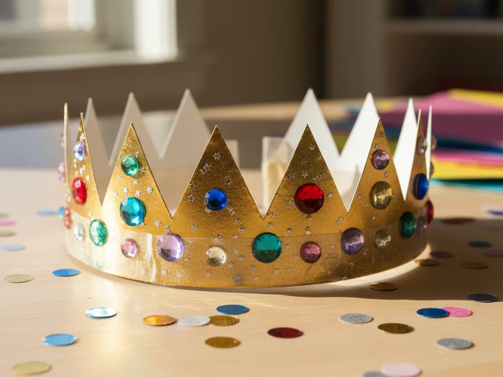
Final Thoughts
The best part about holiday craft paper projects is that the supplies are simple, the cleanup is gentle, and almost every craft becomes a keepsake your child remembers. A few sheets of colored paper and a stick of glue can turn a quiet afternoon into the kind of moment your family talks about for years. These 20 ideas give you something for nearly every season.
Pick one craft for the holiday coming up next, gather your paper and twine, and slow down for an hour together. The finished projects are sweet, but the warm little moments along the way are the real keepsake. 💛
More Crafts You'll Love
If this list inspired you, there are more festive paper craft ideas waiting for you to explore.
Happy crafting, and enjoy every joyful little holiday moment you make together.